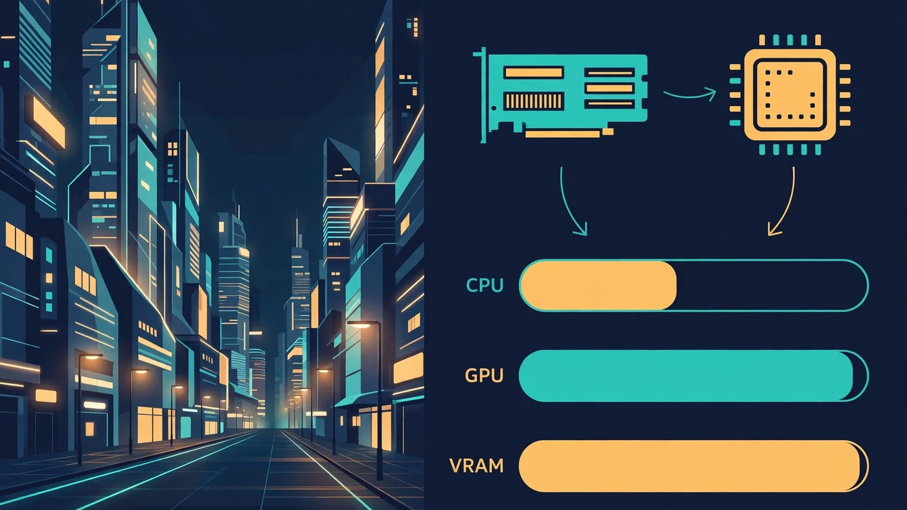

Cyberpunk 2077 Bottleneck: CPU, GPU or VRAM Limiting FPS?
A Cyberpunk 2077 bottleneck is usually the graphics card — but not always, and not in the same way at every setting. In Night City, the GPU sets the frame rate for most players at 1440p and 4K, the CPU takes over in crowded districts and at 1080p with high frame-rate targets, and VRAM quietly decides whether the game stutters as textures stream in. This guide shows you which of the three is limiting your FPS and which settings actually fix it.

Cyberpunk 2077 Bottleneck: The Short Answer
For most players, the GPU is the Cyberpunk 2077 bottleneck. At 1440p and 4K, the graphics card works hardest rendering Night City, so a stronger GPU is what raises your frame rate. That is the normal, healthy state — a GPU at near-full usage means you are getting everything you paid for.
The exceptions are specific, and each has a different fix. If frame rate collapses in crowded plazas while the GPU sits half-idle, the CPU is the limit: every pedestrian runs AI, pathfinding and physics on the processor. If the game stutters while driving fast even though average FPS looks fine, VRAM is the likely culprit — textures stream in constantly, and a card out of memory fetches them over the PCIe bus instead.
Why Night City Is So Demanding on Hardware
Cyberpunk 2077 asks a lot of every part of your PC at once. CD PROJEKT RED describes the game as both graphics- and processor-intensive, and it shows: a seamless open world with no loading screens while you drive, dense crowds with their own routines, and lighting rendered three different ways. Nothing in the city waits for you — it is simulated and streamed continuously, which exposes weak links lighter titles never reveal.
That streaming is also why storage matters more here than in most games. Since Update 2.0, CD PROJEKT RED requires an SSD, and warns that running the game from a hard drive can cause new content to stream in improperly. If the game is still on an HDD, move it to an SSD before changing anything else — no CPU or GPU setting fixes a storage bottleneck.
The Three Rendering Modes: Rasterisation, Ray Tracing and Path Tracing
Cyberpunk 2077 is effectively three games in one engine, and the mode you choose changes the hardware tier you need. In rasterisation mode, with ray tracing off, a mid-range modern card handles the game well at 1080p and 1440p — and this is the mode where the CPU matters most, because the GPU finishes frames fast enough that the processor's preparation speed can become the ceiling.
Ray tracing adds GPU-accelerated lighting — reflections, shadows and global illumination calculated with rays instead of approximations. It is a heavy GPU tax that moves the bottleneck firmly onto the graphics card. Our ray tracing bottleneck guide explains where that cost lands on each part.
Path tracing, sold in the menus as Ray Tracing: Overdrive, replaces the entire lighting pipeline with fully ray-traced rendering. It is the most demanding consumer workload in PC gaming, and even the fastest current cards need upscaling to hold smooth frame rates with it on. In Overdrive mode your bottleneck is the GPU, full stop.
Is the GPU the Bottleneck in Cyberpunk 2077?
In most cases, yes — and that is good news, because it means your CPU is keeping up. The signs are straightforward: GPU usage sits near full, the CPU has clear headroom, and lowering the resolution or render scale raises your frame rate noticeably. If that is your picture, the graphics card is doing all it can, and the fix is a settings change or a stronger card — not a CPU upgrade.
Resolution is the clearest tell. At 1080p, frames are cheap for the GPU, so the CPU's preparation speed matters more and a mid-range card may be all your monitor can use. At 1440p the workload balances: the GPU works hard, the CPU keeps it fed, and a balanced high-end card earns its keep. At 4K the graphics card dominates completely — the CPU's job barely changes, so even a mid-range processor can anchor a 4K build if the card is strong enough. Our resolution bottleneck guide explains how the balance shifts from 1080p to 4K.
When the CPU Limits Cyberpunk 2077
The CPU becomes the Cyberpunk 2077 bottleneck in three situations: crowded districts, 1080p with high frame-rate targets, and older processors paired with a strong graphics card. The mechanism is the same in all three — the processor prepares each frame before the GPU can draw it, and when it cannot prepare frames fast enough, the GPU waits.
Crowded areas are the most common trigger. Every NPC in a busy plaza has an AI routine, a path and physics interactions, and on High crowd density a mid-range processor can saturate its threads just keeping the crowd moving. The symptom is distinctive: frame rate drops sharply in markets and busy streets, recovers on empty highways, and GPU usage falls while the CPU sits near full. Lowering Crowd Density to Medium is the single most effective CPU-side setting — it cuts the simulation load directly and costs almost nothing visually.
At 1080p with a high-refresh monitor, the same logic applies at a smaller scale: frames are cheap for the GPU, so the CPU's preparation speed sets the ceiling. That is also why CD PROJEKT RED's recommended CPU for High at 1080p and 60 FPS is a modern 8-core-class processor such as the Ryzen 7 7800X3D. Beyond that class, a faster CPU changes little at 1440p and 4K, where the GPU takes over. If your CPU is already in that class and GPU usage is low, check for a frame cap or VSync first; our low GPU usage guide covers those checks.
VRAM: The Hidden Cyberpunk 2077 Bottleneck
VRAM is the quiet limit in Cyberpunk 2077, and the one players misdiagnose most often. The game streams high-resolution textures continuously, and the memory it wants grows with resolution, texture quality and ray tracing. When VRAM runs out, the card spills textures to system memory and frame times spike — which feels like stutter even when average FPS looks fine. Our stuttering and 1% lows guide explains why that consistency matters more than the average.
As a rough guide: at 1080p with High textures, 8GB is generally workable. At 1440p with high or ultra textures, 12GB is the safer floor. At 4K — especially with ray tracing or path tracing — 16GB removes the VRAM question entirely. That is why a newer mid-range card with more memory can feel smoother here than an older high-end card. Our VRAM guide breaks down the capacity question by resolution.
The Five-Minute Test That Names Your Limit
Guessing wastes money; a five-minute test names the limit. Play for a few minutes with an overlay showing GPU usage, per-core CPU usage, VRAM usage and frame times, and drive one repeatable route — the same streets, settings and save. Then read the numbers the way our bottleneck check guide describes.
- GPU near full, CPU with headroom, FPS rises when you lower resolution: GPU bottleneck. Lower settings or upgrade the card.
- CPU near full on one or two cores, GPU usage low, FPS barely changes when you lower resolution: CPU bottleneck. Lower Crowd Density first, then check for caps.
- Stutter while driving fast, VRAM usage at the card's limit, frame-time spikes: VRAM bottleneck. Lower Texture Quality or enable upscaling.
- Both usages low and FPS stuck at a round number: a frame cap, VSync or a power limit.
Repeat the same route after any change: a real fix shows up as higher FPS and steadier frame times on the same streets.
Settings That Fix a Cyberpunk 2077 Bottleneck
Fix the limit you found, not the one you assume — the table splits the settings by which part they relieve.
| Setting | Relieves | What to do |
|---|---|---|
| Crowd Density | CPU | High to Medium — the biggest CPU saving in the game |
| Resolution / render scale | GPU | Lower one step, or enable DLSS / FSR Quality |
| Ray Tracing / Path Tracing | GPU and VRAM | Turn off, or step down to RT reflections only |
| Texture Quality | VRAM | Drop one step if VRAM is at its limit |
| Contact Shadows / Local Shadow Quality | GPU | Medium — small visual cost, real GPU saving |
| Mirror Quality | GPU | Lower in dense areas with many reflective surfaces |
Change one setting at a time and re-test on the same route, so you know which change actually helped. Turning everything down at once hides the answer — and often costs visual quality you did not need to give up.
DLSS, FSR and Frame Generation in Cyberpunk 2077
Upscaling is the single most powerful tool for a Cyberpunk 2077 bottleneck, because it attacks the GPU load directly: the game renders at a lower internal resolution and reconstructs a sharp image, effectively giving your graphics card free performance. On NVIDIA cards use DLSS, on AMD cards use FSR, and on Intel Arc use XeSS — the vendor-matched upscaler is the right default. The Edgerunners 2 update added DLSS 4.5 with up to 6X Multi Frame Generation and FSR 4.
There is one interaction to watch. Aggressive upscaling at 4K can shift the bottleneck onto the CPU: the GPU renders frames much faster and demands more game logic per second, so a mid-range CPU comfortable at native 4K can become the limit at DLSS Performance mode. If that happens, step the upscaler back to Quality or Balanced rather than blaming the CPU. Our DLSS, FSR and frame generation guide works through exactly this trade-off with Cyberpunk 2077 as its example.
Frame generation goes further by synthesising extra frames between real ones, raising displayed FPS without asking the CPU for more work — useful in single-player Night City, less useful where added latency matters. Treat it as a smoothness tool for a GPU-bound game, not a fix for a CPU limit: it cannot make the processor prepare frames faster.
What to Upgrade First — and What to Skip
Upgrade in the order the test points to. If the GPU is the limit at your resolution, buy the strongest card your budget allows and prioritise VRAM — 12GB for 1440p, 16GB for 4K or path tracing — over a small speed gain on a card with less memory. If the CPU is the limit in crowded areas, a modern 8-core-class processor with dual-channel RAM at its rated speed is the target. Our single vs dual channel guide and RAM speed guide cover both checks.
Skip three upgrades. Do not buy a flagship GPU for a 1080p 60Hz monitor — the display caps what you can see. Do not chase a CPU upgrade when GPU usage already sits near full. And do not replace a card that is only short on memory with a faster card that has the same amount of it. Before spending anything, check the PC upgrade checklist.
Free PC Bottleneck Calculator — Estimate CPU and GPU balance for your resolution and workload: check whether your CPU, GPU or VRAM is the slow half of the frame on the PC Bottleneck Calculator (see its methodology page) before you spend money on a Cyberpunk 2077 upgrade.
Conclusion
For most players the Cyberpunk 2077 bottleneck is the GPU; in crowded districts and at 1080p with high frame-rate targets it is the CPU; and whenever the game stutters while streaming Night City around you, it is VRAM. Name your limit with the five-minute test, fix it with the setting that relieves that part — Crowd Density for the CPU, upscaling or lower resolution for the GPU, Texture Quality for VRAM — and upgrade only the part the test points to.
Frequently Asked Questions
Is Cyberpunk 2077 CPU or GPU heavy?
Both, but in different ways. The GPU carries most of the load at 1440p and 4K, especially with ray tracing or path tracing enabled, so it is the bottleneck for most players. The CPU matters in crowded districts, at 1080p with high frame-rate targets, and when Crowd Density is set to High — there the processor's ability to prepare frames sets the ceiling.
Why is Cyberpunk 2077 using 100% CPU?
High CPU usage in Cyberpunk 2077 is often normal: the game is processor-intensive as well as graphics-intensive, and it uses the CPU heavily for crowd AI, pathfinding, physics and streaming Night City around you. It only signals a bottleneck when it comes with low GPU usage, poor frame pacing or stutter. Lowering Crowd Density to Medium is the first setting to try, since every NPC on screen adds simulation work for the CPU.
How much VRAM do you need for Cyberpunk 2077?
At 1080p with High textures, 8GB is generally workable. At 1440p with high or ultra textures, 12GB is the safer floor, and at 4K — especially with ray tracing or path tracing — 16GB removes the VRAM question entirely. When VRAM runs out, textures spill to system memory and frame times spike, which feels like stutter even when average FPS looks fine.
Does Cyberpunk 2077 need a fast CPU?
It needs a capable modern CPU, but not the fastest one you can buy. CD PROJEKT RED lists a modern 8-core-class processor, such as the Ryzen 7 7800X3D, as the recommended CPU for High settings at 1080p and 60 FPS. Beyond that class, a faster CPU changes little at 1440p and 4K, where the GPU is the limit — spend the extra budget on the graphics card instead.
Is 8GB of VRAM enough for Cyberpunk 2077?
At 1080p with sensible settings, yes — 8GB is enough for High textures and ray tracing off. At 1440p with Ultra textures or any path tracing, 8GB becomes the limit: the game will still run, but you will see stutter as textures stream in and out of memory. If you play at 1440p or above, a 12GB or 16GB card is the better long-term choice.
Sources
Official documentation referenced in this guide:
- CD PROJEKT RED: Edgerunners 2 Update (2.5) patch notes (DLSS 4.5 with Multi Frame Generation, FSR 4, FSR Anti-Lag 2, MetalFX Frame Interpolation)
- CD PROJEKT RED: Update 2.0 (SSD now required to run the game, DLSS 3.5 with Ray Reconstruction)
- NVIDIA: Cyberpunk 2077 Ray Tracing: Overdrive Mode — CD PROJEKT RED interview (path tracing replacing the lighting pipeline, DLSS 3 making it playable)
- NVIDIA: Cyberpunk 2077: Ultimate Edition (full ray tracing, DLSS 3.5 with Ray Reconstruction, NVIDIA Reflex)